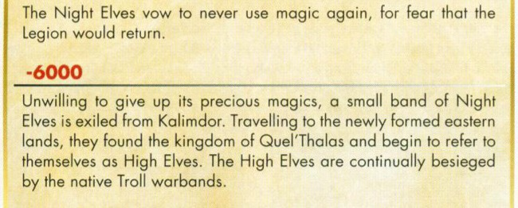
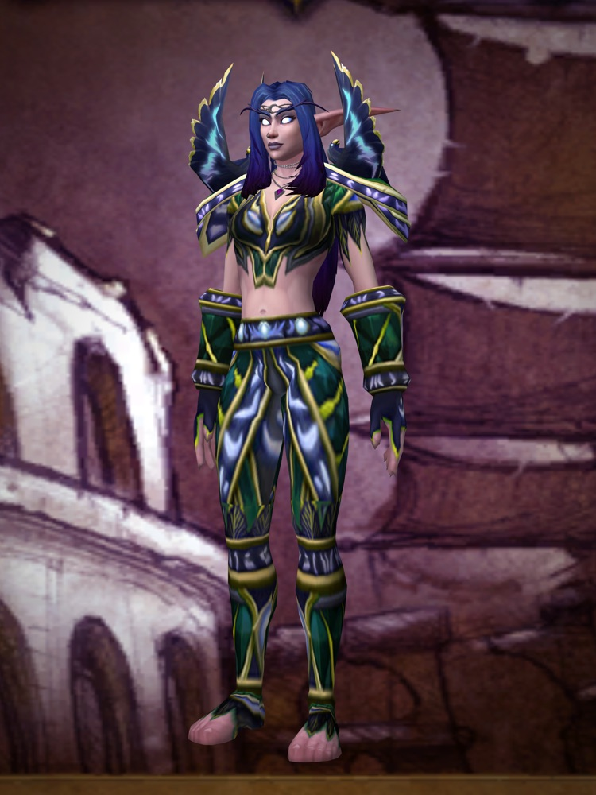

Night elves, high elves, blood elves and Skyborne
Four kinds of elf, one family tree. In World of Warcraft: Forever you can play a night elf or either version of the Skyborne. High elves and blood elves aren't playable.
| Elf | Faction in Forever | Classes | Can you play one? |
|---|---|---|---|
| Night elf | Alliance | Druid, hunter, priest, rogue, warrior | Playable |
| High elf | None | None | Not playable |
| Blood elf | None | None | Not playable |
| High Order Skyborne | Alliance | Druid, hunter, mage, rogue, warrior | Playable, with the Skyborne Heroic Pack |
| Windshaper Skyborne | Horde | Druid, hunter, rogue, shaman, warrior | Playable, with the Skyborne Heroic Pack |
Night elves
Night elves came first. Blizzard says they founded a vast empire ten thousand years ago, and that their reckless use of magic brought it to ruin; in grief they withdrew to the forests. The 2004 guide adds that they vowed never to use magic again. In Forever they are Alliance and can be druids, hunters, priests, rogues or warriors.
High elves
High elves are the ones who wouldn't give magic up. In the 2004 guide's history of Azeroth, a small band of night elves is exiled for keeping it, travels east and founds the kingdom of Quel'Thalas. Blizzard says the high elves of Quel'Thalas drew their strength from the Sunwell for thousands of years. They are not a playable race in Forever.

Blood elves
Blood elves are high elves after the fall. Blizzard says an invasion by the undead Scourge decimated Quel'Thalas and cut its people off from the Sunwell, and the survivors took the name blood elves, or sin'dorei in their own tongue. In the modern game they are a Horde race. In Forever they are not playable, and no Blizzard post we have read says whether they ever will be.
Skyborne
The Skyborne are the newcomers, and the only elves on both sides. Blizzard also calls them the shen'dorei: descendants of Highborne rebels who fled Eldre'Thalas and built a home in Skywall, one of the elemental planes, with the help of wind spirits. High Order Skyborne join the Alliance and can be mages. Windshaper Skyborne join the Horde and can be shaman. Both can be druids, hunters, rogues and warriors. The race comes with the Skyborne Heroic Pack, not the included game.
More on the Skyborne: both versions, what the traits do and how to get one
Which one?
The short version: a night elf for the forest and the Alliance. A Skyborne for an elf on the Horde, or an elf mage on the Alliance. A blood elf only if you are happy to wait, and nobody knows for how long.
What Blizzard hasn't said
- Whether blood elves, high elves or Quel'Thalas will come to Forever later. A Blizzard forum thread paraphrases a September developer Q&A as a yes, but gives no quote, and no Blizzard post we can find says so.
A race is mostly a look, a starting zone and four small perks called racial traits. Your faction decides who you can group with, because Horde and Alliance players can't group together, so settle the faction first.
Where this comes from
How we verify- Blizzard
The night elf empire ruined by magic, and the withdrawal to the forests; the night elf, High Order and Windshaper class lists; high elves and blood elves are not in the race list
Blizzard: Create the Hero You Want to Be (races, classes and racial traits) - The 2004 guide
The night elves vow never to use magic again; a small band is exiled, founds Quel'Thalas and begins to call itself High Elves
Read from the guide, printed page 38 - Blizzard
The high elves of Quel'Thalas, the Sunwell, the Scourge, and the name blood elves or sin'dorei
Blizzard: Blood Elf race page (modern World of Warcraft) - Blizzard
The Skyborne as shen'dorei, rebels who fled Eldre'Thalas and found refuge in Skywall
Blizzard: Found Photos panel recap - Blizzard
Highborne exiles, the pact with the wind spirits and Skywall as one of the elemental planes
Blizzard: Meet the New Skyborne - Blizzard
The Skyborne race is part of the Skyborne Heroic Pack
Blizzard: pre-purchase upgrades for WoW Forever - Blizzard
Horde and Alliance players can't group together
Blizzard: Deep Dive panel recap - Not confirmed
Blood elves or Quel'Thalas in Forever later
Only a forum paraphrase of a September 17 developer Q&A, with no quote and no Blizzard reply. Not in any Blizzard post we could read as of October 5.
